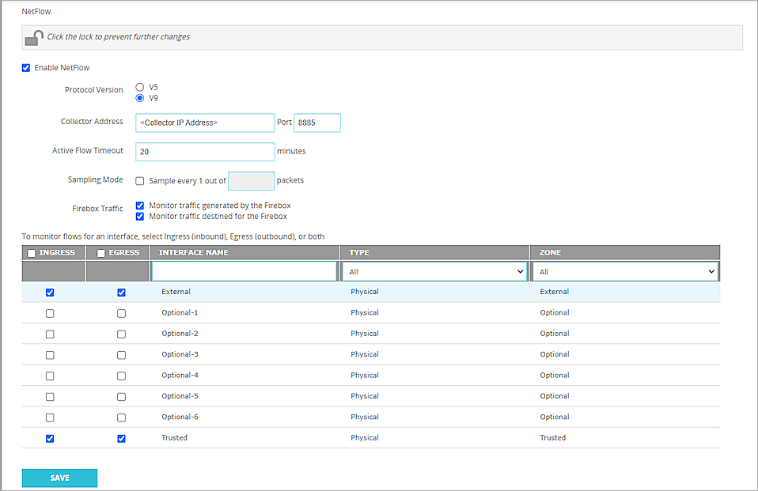

Contents
Deployment Overview
This document describes how to configure your Firebox as a NetFlow exporter to integrate with the PRTG network monitor service.
Topology
This diagram shows a typical NetFlow topology.
Before You Begin
Before you begin these procedures, make sure that:
- The PRTG Network Monitor version is 23.2.84.1566 x64
- Your PRTG Network Monitor services are running
- You have a Firebox that runs Fireware v12.9.4 (Build 682007) or higher
Configure Your Firebox for PRTG Network Monitor
You must configure your Firebox as a NetFlow exporter and specify connection settings for the NetFlow collector.
To configure your Firebox as a NetFlow exporter, from Fireware Web UI:
- Select System > NetFlow.
- Click to unlock and make changes.
- Select Enable NetFlow.
- For the Protocol Version, select V9.
- In the Collector Address text box, type the IP address of the NetFlow collector.
- In the Port text box, type 8885.
The Firebox must be able to communicate with the NetFlow collector at the specified IP address and port with the UDP protocol. - In the Active Flow Timeout text box, type 20.
The Active Flow Timeout setting segments your flow into small flows based on the value you specify. We recommend that you specify an Active Flow Timeout value that is lower than the Active Flow Timeout value on the collector. This helps to avoid data loss. If the Active Flow Timeout value is lower on the collector, the collector might stop listening while the Firebox is sending data. - Keep the Sampling Mode disabled.
- To monitor Firebox traffic, select the Monitor Traffic Generated by the Firebox and Monitor Traffic Destined for the Firebox check boxes.
- To enable NetFlow for an interface, select the check box adjacent to that interface.
If you have many interfaces, use the Interface Name search box or select an option from the Type or Zone drop-down list to find an interface quickly. - To select all interfaces, select the check box adjacent to the Interface Name text box.
- Click Save.

For more information about NetFlow on the Firebox, go to About NetFlow and Configure NetFlow in Fireware Help.
Configure Your PRTG Network Monitor
After you configure the Firebox, you must configure the PRTG Network Monitor settings.
Add a Device
To add a device:
- Log in to the PRTG web console with your administrator account.
When you first start the thread, Network Monitor searches for all devices in your network that it can reach. - If your Firebox is detected, go to Add a NetFlow v9 Sensor.
- If your Firebox is not detected, select Devices > Add Device to add it manually.
- Select a group for your Firebox. Click OK.
- In the Device Name text box, type your Firebox device name.
- For the IP Version, select IPv4.
- In the IPv4 Address/DNS Name text box, type the IPv4 address of your Firebox.
- (Optional) Select a device icon.
- Keep the default settings for all other options. Click OK.
Add a NetFlow v9 Sensor
To add a NetFlow v9 sensor:
- Right-click the Firebox in the list, and select Add Sensor.
Or, click Add Sensor under your device sensor list. - From the Technology Used? section, select Flow Protocols.
- Select NetFlow v9.
- In the Receive Packets on UDP Port text box, type 8885.
This value must be the same as the UDP port number in the NetFlow export options of the Firebox. - Select one or more local IP addresses for Receive Packets on IP Address.
- In the Active Flow Timeout text box, type a value. PRTG recommends a value that is 1 minute greater than the Active Flow Timeout value you configured on the Firebox.
- For Sampling Mode, select Off.
- Keep the default settings for all other options.
- Click Create.

Test the Integration
After you configure the Firebox and PRTG NetFlow settings, the sensor shows a connected status. You can click the sensor to view the details of the flow in your collector.